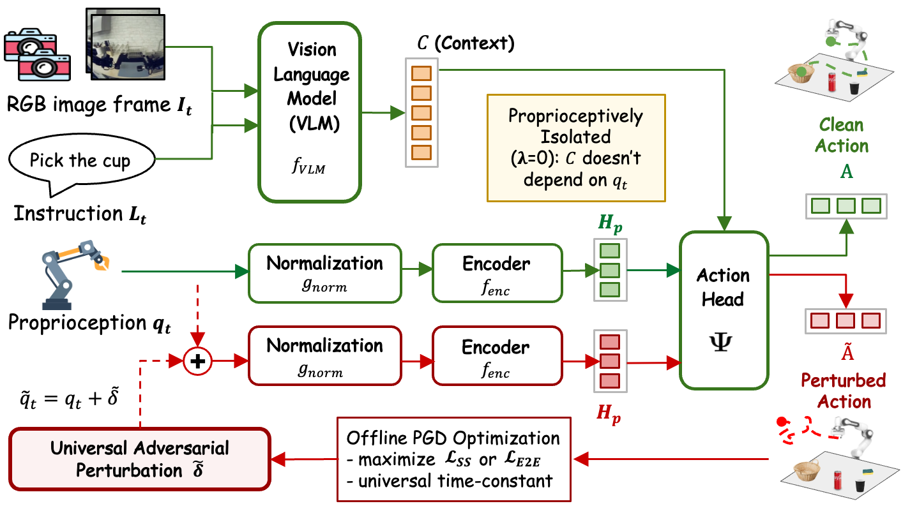

Attacking Proprioception

We adapt the attack optimization formulation from prior work on attacking vision-based diffusion policies, and apply it to the proprioception input channel of VLAs. We implement two variants that differ in how the adversarial objective is constructed.
Single-Step (SS) Attack

Optimizes a perturbation to disrupt the VLA's velocity prediction at a single, randomly-sampled denoising step. Requires no ground-truth demonstrations. The policy's clean prediction serves as the target.
End-to-End (E2E) Attack

Backpropagates through the entire action generation chain and optimizes a perturbation to maximize deviation from the ground-truth demonstration action. E2E directly targets the final output of the policy.

Key Finding
Contrary to prior work on diffusion-based policies (where single-step attacks are more effective at causing task failure), E2E consistently outperforms SS here. Flow matching's Euler sampler is fully deterministic: with no noise re-injected between steps, an early perturbation compounds along one fixed trajectory rather than being reset. This makes whole-trajectory optimization strictly more effective than targeting a single step.